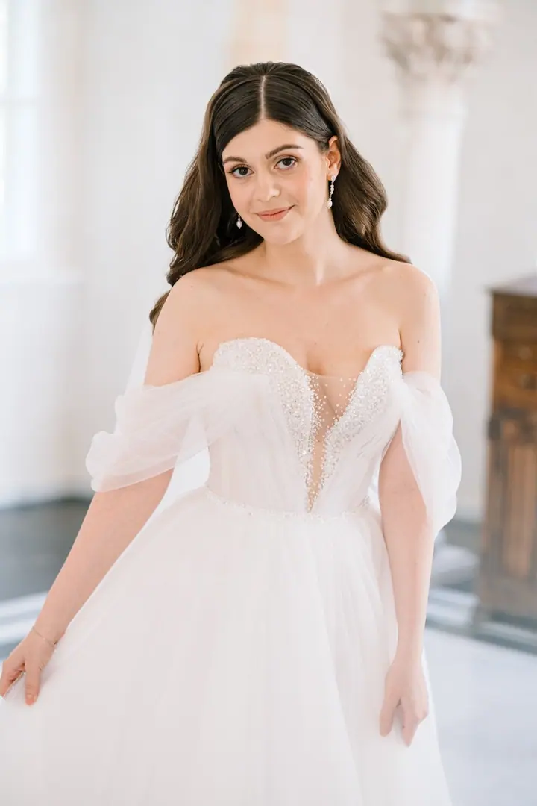
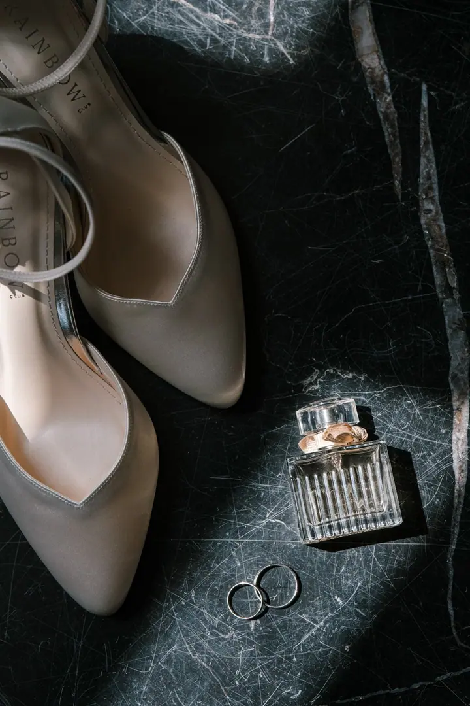
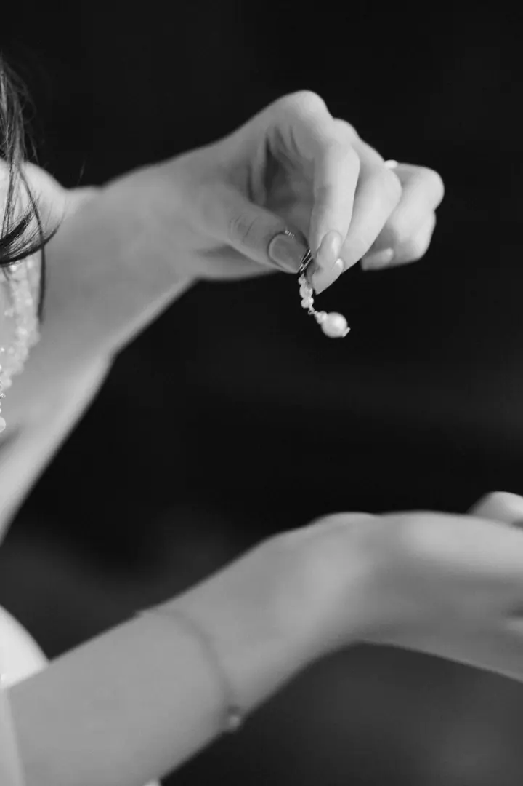
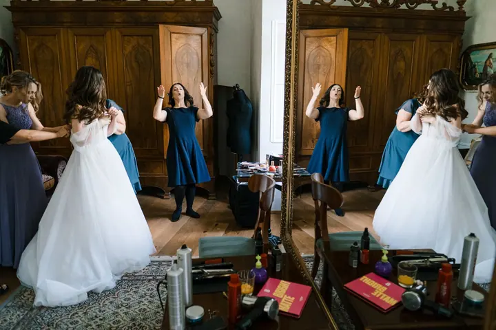

Svatební focení
Elegantní i netradiční svatby fotím reportážně a přirozeně, od nervózních příprav přes dojetí při obřadu až po zábavu na parketu. Na digitál a případně i na analog, protože filmová fotka má atmosféru a šmrnc.





Jmenuji se Jana Hronská a jsem svatební fotografka z Prahy, které jeden fotografický styl jednoduše nestačí. Fotím reportážně a přirozeně, na digitál i na film, a hledám úsměvy i slzy štěstí.
Více o mně
„Mým úkolem je nafotit vaši svatbu tak, aby měla duši.“
— Jana Hronská
Elegantní i netradiční svatby fotím reportážně a přirozeně, od nervózních příprav přes dojetí při obřadu až po zábavu na parketu. Na digitál a případně i na analog, protože filmová fotka má atmosféru a šmrnc.
Fotím podnikatele, freelancery, kreativce i malé týmy, kteří potřebují víc než jen jednu hezkou profilovku. Formálně, nebo klidně jako brandový punk, podle toho, co má vaše značka říkat.
Rodinné fotky beru stejně jako svatby: reportážně, přirozeně a s citem pro atmosféru. Žádné strojené pózy, prostě vy.
Jemné a elegantní těhotenské fotky, které zachytí atmosféru a emoce tohohle krásného období.
Jsem svatební foto ninja: všude se nacpu, ale nikde nepřekážím. Zachycuji dění tak, jak se opravdu odehrává, od nervózních příprav přes dojetí při obřadu až po uvolněnou zábavu na parketu. Pózovat po vás chtít nebudu, je to vaše svatba, ne fashion focení do časopisu.
Pracuji s kombinací digitální a analogové fotografie, protože každý příběh si žádá jiné vyjádření. Někdy jsou to světlé, šťastné momenty plné úsměvů, jindy tajemné intimní chvíle. Ať plánujete elegantní svatbu na zámku, nebo netradiční svatbu ve funkcionalistické vile či na zahradě, ráda převyprávím váš den skrze fotky.
Jsem ukecaný introvert připravený na každou špatnost, kamarádka, která upozorní na rozmazaný make-up, a pomocná ruka, kdykoliv je potřeba. Kromě svateb fotím i brandové a business portréty, rodinné a těhotenské fotky nebo glamour.

Potkáme se v Praze, nebo online. Nejdřív se trochu poznáme, zeptám se, jak jste se poznali a jakou máte představu o focení.
Projdeme spolu váš harmonogram a poradím vám s pár věcmi ohledně organizace, aby se na svatbě všechno stihlo vyfotit.
Fotím ideálně 9 hodin, reportážně a nenápadně. Párové focení může trvat klidně jen pět minut a vždycky vás navedu, co máte dělat.
Fotek dělám opravdu hodně, abych v postprodukci mohla vybrat ty, kde se usmíváte, nemrkáte a prostě vypadáte dobře.
Vůbec ne. Během dne tvořím reportážní fotky, takže focení skoro nebudete vnímat. U párového focení vás navedu a budu takový váš režisér.
Potkáme se v Praze nebo online, trochu se poznáme, projdeme harmonogram a vaši představu o focení.
Ideálně 9 hodin. Za tu dobu zvládnu obřad, dojaté maminky, dort, první tanec i pořádnou párty.
Ano. Fotím na digitál, a pokud chcete, i na analog, protože filmová fotka má atmosféru a šmrnc.
Svatby fotím v Praze, po celé České republice i v zahraničí, ať je to na zámku, v galerii, ve vile nebo na zahradě.